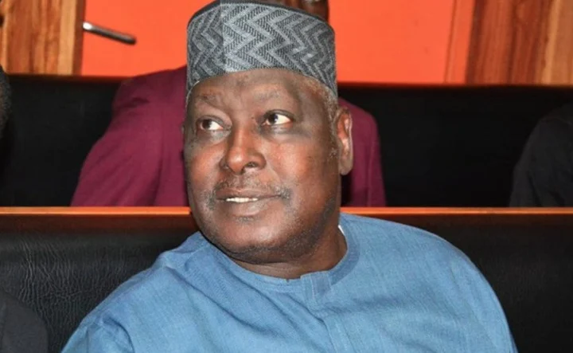

Nigeria Politics · 22 Sep 2026
Political Realignment Ahead of 2027: NDC Gains Momentum as Leaders Outline Strategy

As political preparations gather momentum for the 2027 general elections, the Nigeria Democratic Congress (NDC) has welcomed high-profile figures into its fold, while key leaders clarify their positions regarding upcoming electoral contests.
The political landscape leading up to the 2027 general elections is experiencing notable shifts and realignments across Nigeria. Recent developments highlight the growing prominence of the Nigeria Democratic Congress (NDC) as political actors position themselves and mobilize grassroots support for the upcoming electoral cycle.
A significant development for the emerging political platform is the alignment of former Secretary to the Government of the Federation (SGF), Babachir Lawal, with the party. According to reports detailing the NDC gaining ex-SGF Babachir and mobilising polling agents, Lawal has thrown his weight behind the political ticket comprising Peter Obi and Rabiu Kwankwaso under the broader coalition efforts, signalling concerted early preparations at the grassroots level through the mobilization of polling agents.
At the same time, internal structural dynamics within the party continue to take shape. Former Governor of Bayelsa State, Seriake Dickson, has explicitly ruled out running for the presidency in 2027. Instead, as noted in reports covering how Seriake Dickson rules out a 2027 presidential bid, his primary concentration is directed toward strengthening the NDC and establishing it as a robust, viable national political platform capable of contesting effectively.
These developments unfold amid broader national conversations emphasizing the need for institutional preparedness, peace, and youth engagement as the country looks toward the 2027 ballot. Political stakeholders across various alignments continue to outline their strategies, leaving the exact configuration of coalitions and final candidate lists as ongoing processes to watch.
Sources
- https://news.google.com/rss/articles/CBMikgFBVV95cUxPSjRfaGx5ZFlkRnZiZS1IQlUtTW5MeVowS20tTHVWLTJjQTBZWUZPS2U5bTM3UTRoYkZRbVlRYjM4M0dxMHF5NDFXM0hiaTFBMTVjT1JoVVB3TmFhMWRGdDA3YjFzY1dXaWxta2wzQXR0dmtRU0hWSkZrbUh5ZHpxUGVoTzMzQ2RNYkdTaW9LbzZuUQ?oc=5
- https://news.google.com/rss/articles/CBMikgFBVV95cUxPRXdyUmZhM1FiT0dqcV9uZjJ5ZlRGMEY0T1owc3JHRHlVbnA5ZmFST1dIdlNJT2Vaakt5T2JEUGlJcDJqRUZFTHRiUEpOQkNMVE94Vkp1eXlJT3pycW5NNndOMXpTQnd4Z2t0QjdDZTA2bjlzazJiOU82ejF5WE4yOHBoWVNQOTlzQjZzYXh6V3I5QQ?oc=5
- https://thereporter.com.ng/seriake-dickson-rules-out-2027-presidential-bid-focuses-on-building-ndc
Sources
This article was produced by the C. O. Eric AI Newsroom from the cited sources. It is published only after automated evidence and safety checks.